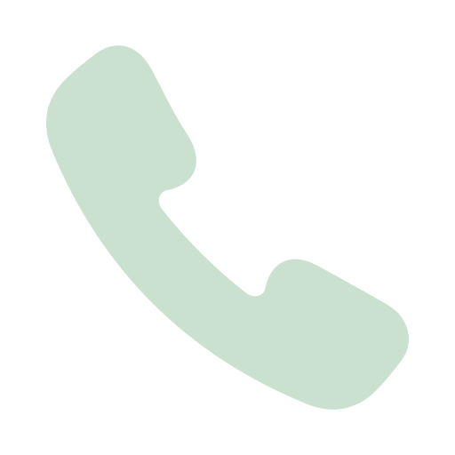
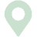

Kontakt os
Du kan kontakte os telefonisk, over mail eller ved at komme forbi klinikken. Vær opmærksom på, at man kun kan ændres tid og meldes afbud over telefonen.
 +45 86 321 321

H. H. Seedorffs Stræde 3-5, 3. sal, 8000 Aarhus
Åbningstider
Klinikken har følgende åbningstider:
Mandag & onsdag: 10:00-17:00
Tirsdag: 07:30-12:00
Torsdag & fredag: Lukket
Telefontider
Klinikken har følgende telefontider:
Mandag & onsdag: 08:00-12:00,
samt 15:00-17:00
Tirsdag: 08:00-12:00
Torsdag & fredag: Lukket
OBS: Bemærk, at telefontider og åbningstider ikke er ens!